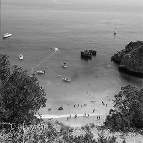
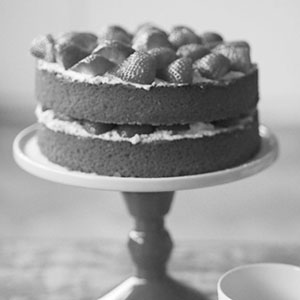
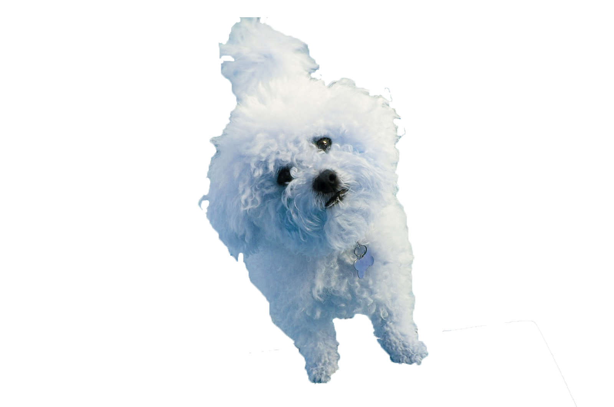

Catherine Oxley
French Graduate
My name is Cat. I like fluffy dogs and baking. And coding, obvs.
My favourite things
|  |
PortugalI love Portugal. I lived in Lisbon for 6 months and it will always be my favourite city in the world! |

|
Fluffy dogsOr just anything fluffy. My favourite dog is obviously my pet Bichon Frise, Basil. |
|  |
BakingI love baking because it's fun and relaxing and involves sugar. I don't really like making bread. |
This site was made by Catherine Oxley©
